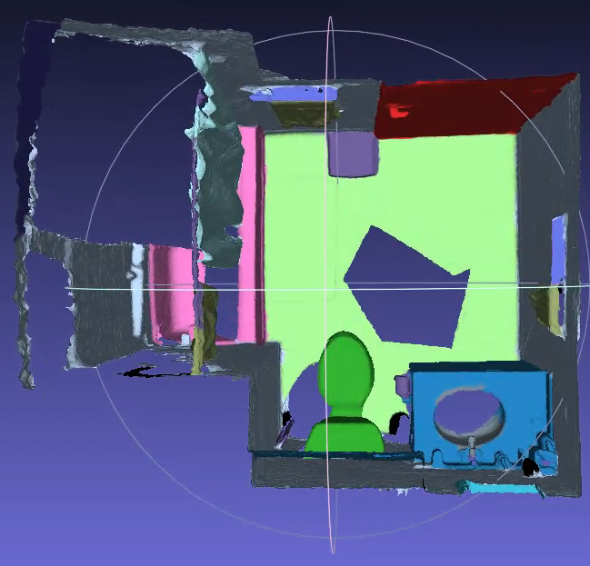

Examples
Here are some examples of using FCLib. All the codes are in directory examples. After compilation, you can find the binary files in build/example and enter following commend to test.
Read PLY Files and Visualize the Point Cloud or Mesh
./ReadPLYPCD [filename.ply]
./ReadPLYMesh [filename.ply]
Read Point Cloud from RGB and Depth
./ReadRGBD [color] [depth]
SparseTracking and DenseTracking
./SparseOdometry [source_rgb] [source_depth] [target_rgb] [targe_depth]
./SparseOdometryMild [source_rgb] [source_depth] [target_rgb] [targe_depth]
./DenseOdometry [source_rgb] [source_depth] [target_rgb] [targe_depth]
Generate Model from Scannet dataset
example/GenerateModelFromScannet.cpp can generate a model based on the given color, depth and camera pose. Note that there is an alignment between color and depth because of different camera intrinsics.
./GenerateModelFromScannet [Path]
GetLabelUsingKDTree.cpp can infer the semantic label of each point in generated model based on KDTree and the given labeled model.
./GetLabelUsingKDTree [original model path] [reference model path]
Mesh Simplification
./SimplifyMeshClustering [filename.ply] [grid_length]
./SimplifyMeshQuadric [filename.ply] [simplify_ratio]
Here are some resuls:


Bundle Adjustment
Input a pair of RGBD frames,the camera poses will be adjusted according to the result of feature matching by Bundle Adjutment, and then the matching result will be visualized. You can also find several images in current directory which plot the reprojection results.
./BATest [source_rgb] [source_depth] [target_rgb] [targe_depth]
The result will be like:


The BA optimize the camera poses and coordinates of 3D points jointly. However, the alignment is just based on camera poses and camera intrinsics and don't utilize the coordinates parts. So generally the comparison of reprojection error should looks better than point cloud alignment.
ICP
ICPTest [source_pcd] [target_pcd]
ICPTest registers two point clouds. You can choose to use PointToPlane or PointToPoint by changing the code. From the experiment we can see PointToPlane have a much faster convergence rate.


RansacRegistration
RansacTest [source_pcd] [target_pcd]
RansacTest will register two point cloud. At the beginning, the source point cloud will be rotated randomly and translated, so we can see clearly what GlobalRegistration can do.
The following images show the results. You can choose to visualize the alignments or correspondences as you want by changing the example code.


Room Detection
You can do some interesting things by uisng module algorithm. In example/RoomDetection.cpp, we can get the 2d map of the room from the room model with semantic labels. We use LineDetection, PlaneDetection( acturally we just need to detect the lines or planes), DCEL, KMedoidsClusteringDynamic.
./RoomDetection ../../TestData/room_with_labels.ply
Input model:

Results:


For details, refer to Automatic room detection and reconstruction in cluttered indoor environments with complex room layouts.
Three Reconstruction Systems
A slam system wihout an backend is incomplete. If you just track frames and don't optimize the poses, the results will have ghosting, just like this:

FCLib implements three complete SLAM systems, which are different in backend or tracking method.
FBAFusion
FBAFusion using SparseTracking, Mild loop closure detector,Fast BundleAdjustment for optimization.
./FBAFusion ../../TestData/rgbd/607 0.01
You should see:

FBAFusion is the fastest of the three, the generated model looks like:

BAFusion
BAFusion uses SparseTracking, Mild closed-loop detection, plus BundleAdjustment back-end optimization. As mentioned before, BA will have a larger matrix dimension in later stage. Even in BAFusion, each keyframe has only 30 feature points for coordinate optimization, and it still takes about a minute or more to optimize them. And BA will optimize the spatial points (optimize the projection noise and parameters), but this part of the optimization is not considered when the final model is generated, only the optimized pose is used, so the reconstruction model does not look as good as FBAFusion. However, you can still see the optimization effects (no ghosting). If all aspects are taken into consideration, the effects of BA should be the best.
./BAFusion ../../TestData/rgbd/607 0.01
Generated model:

DenseFusion
DenseFusion using DenseTracking, without a 2D loop closure detetion. It takes every \(N\) of the read frame as a submap. When a new submap is detected, BAFusion perform GlobalRegistration for the current submap and the previous submaps, and then sets a threshold to detect whether there is a correct loop closure. Of course, DenseTracking and GlobalRegistration are much slower than SparseTracking and MILD loop closure detection. Therefore, DenseFusion is also slower that FBAFusion and is an offline reconstruction system. As for backend optimization, DenseFusion uses Fast BundleAdjustment.
./DenseFusion ../../TestData/rgbd/607 0.01
Generated model:

Note: The color looks strange because of the default BGR format of OpenCV.